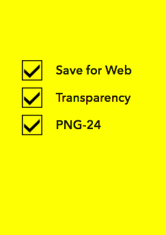

Community Geofilters Tips:
1- Please submit a web-optimized, transparent PNG.
2- PNG should have a width of 1080 pixels and a height of 1920 pixels.
3- PNG must be under 300 KB.
After doing all the above TIPS you can now click NEXT to submit your design and choose the locations
On-DEMAND Geofilters Steps:
1- Design: Upload your own, or use one of our many templates to get started.
2- Map: Pick a time and set a geofence for your Geofilter.

3- Buy: Submit your Geofilter and have it reviewed within one business day.

After doing all the above steps now you should wait for the approval.